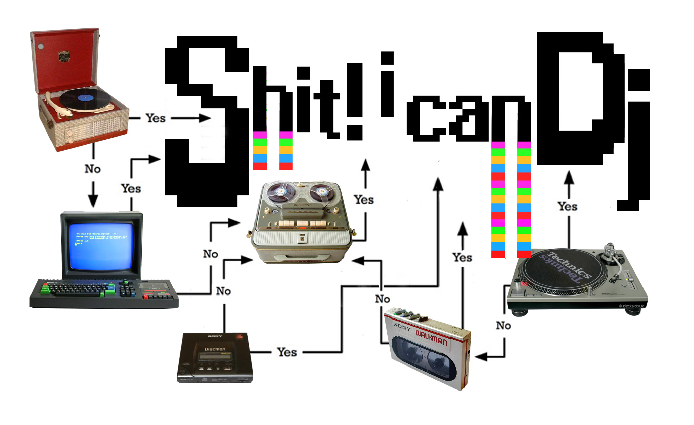

archive stuff, and keep track of things.
Back to Blog | Gary-Martin
Shit! I Can DJ |
|---|
|

Shit! I can DJ is a music collective (led by Lisa Busby) that aims to democratise DJ practices. They make, curate and promote “work that seeks to explore experimental or unusual DJ practices.” They define ‘DJ practice’ as "the use of any playback media in music and art” and embrace its diversity of practice, “from the beat-matching club DJ, to the home made soundsystem builders of Jamaica and Columbia, the experimental turntablist practice of for example Marina Rosenfield and Otomo Yoshihide, to the sculptural and kinetic work of say Stephen Cornford or Ujino and the Rotators.” But they take issue with the way the term ‘DJ’ is perceived as highly specialised and skilled, but that DJs are often not acknowledged as ‘musicians’ at all. Shit! I can DJ believes the seemingly disparate strands of DJ or playback media practice should actually be understood as reflexive forms in dialogue. It fosters practice where specialism meets the non-specialist. Nomadic Female DJ Troupe 2 from Nomadic Female DJ Troupe on Vimeo. I love their ethos and approach to making DJ practice accessible and inclusive. This is something I would like to incorporate in part of my project, as I believe active participation in music could address and combat some of the issues associated with attention and pace of life brought on by internet platforms. Maybe I'll so some participatory DJ parties where the audience can choose songs to play? |